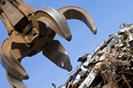
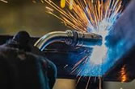
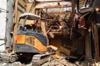
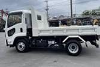

不要な金属を回収し、資源として再利用します。環境に優しく、持続可能な社会に貢献。迅速対応、安心価格で承ります。
業務紹介


専門的な技術で金属を溶接・加工します。複雑な形状や精密な部品も、高品質な仕上がりを実現。お客様の多様なニーズに応え、一貫生産でサポートします。

専門知識と技術で、安全・迅速な建築解体を実現します。アスベスト除去から産業廃棄物処理まで一貫対応。周辺環境に配慮し、安心してお任せいただけます。

多様な車両と熟練のドライバーで、お客様の物流を力強くサポート。目的地まで安全・迅速に、最適な配車プランをご提案します。コスト削減にも貢献し、効率的な業務を実現します。